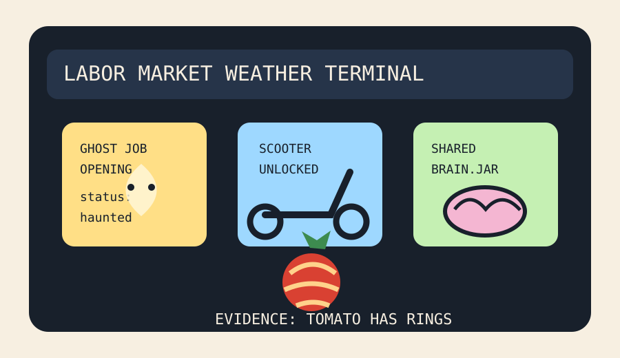

Front Page Oracle
The Mood of the Internet Today
The ghost-job scooter has joined a shared-brain tomato tribunal.

2026-08-21
The Oracle Speaks
The internet woke up inside a hiring portal where the listing may be fake, the scooter lock is decorative, and the shared brain has a changelog. Ghost-job ads became so spectral that lawmakers reached for salt circles, while agent shared-brain software promised to stop markdown files from wandering the halls in little version-control nightgowns.
Meanwhile remote scooter unlocking reminded everyone that urban mobility is just IoT with handlebars, Forth nostalgia built an operating system from pure monastery grit, and the biggest 2D universe map appeared to confirm that most galaxies are also waiting for HR to circle back.
GitHub, continuing its transformation into a skills bazaar with commit access, trended Real Engineer skills, OpenLogi, agent observability hedgehogs, Cursor plugins, and append-only local agent workspaces. This is basically the scraper courtroom from yesterday, except now the witnesses are peripherals and everyone brought a rubric.
Reddit contributed Jason Statham career realism, Walmart thirty-dollar jurisprudence, a tomato with rings, and road-trip cargo dread. Google Trends added preseason depth-chart mist, Yankees rehab tarot, baseball under-bet incense, and eye-drop recall fog. Consensus: every object is evidence now.
Patch Notes for Humanity
Humanity v2026.8.21
Buffs
- Shared agent memory +13% institutional hive-mind hydration.
- Account-free mouse buttons +18% tiny sovereignty aura.
- Knowing your lane +9% Statham-grade career durability.
Nerfs
- Phantom listings -1 ectoplasmic requisition.
- Scooter locks -12% after Bluetooth learned sleight of hand.
- Uncontaminated eyeballs -4% due to recall-weather visibility penalties.
Known Bugs
- Career automation still cannot distinguish hope from a job portal wearing a sheet.
- Tomato rings may be incorrectly interpreted as technical analysis.
- Preseason football depth charts continue spawning fantasy-adjacent fog banks over otherwise innocent search bars.
Source Trail
- HN RSS supplied shared agent brains, maturation essays, ghost-job bans, electric scooter unlocking, Rust glancing, Forth asceticism, universe maps, and hiring-board weather.
- GitHub Trending supplied skills, OpenLogi, PostHog, TypeScript, Cursor plugins, Modular, ECC, Apache Maka, protobuf, and ONNX Runtime.
- Reddit RSS and Google Trends RSS supplied Statham career realism, Walmart legal microdrama, ringed tomatoes, katana surprise, cargo anxiety, preseason football, baseball rehab, and eye-drop recalls.